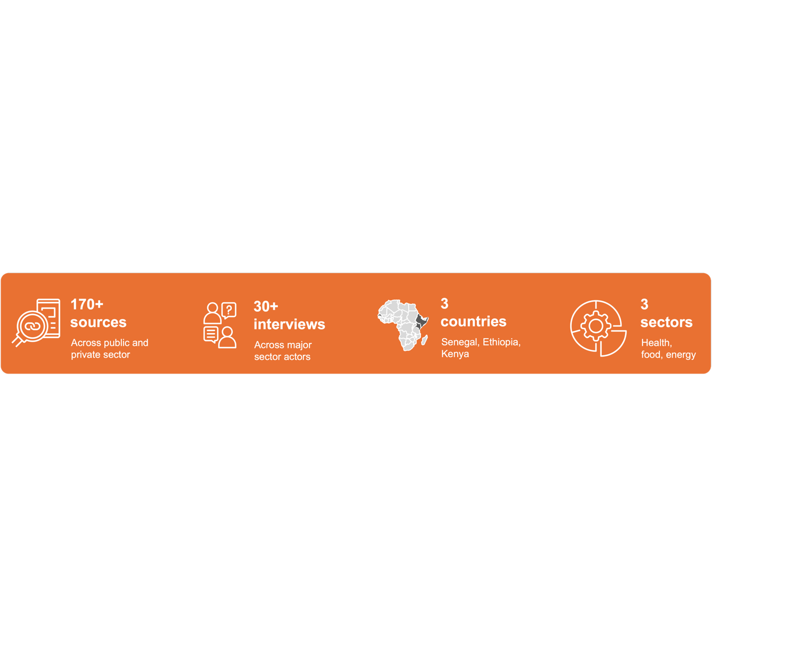
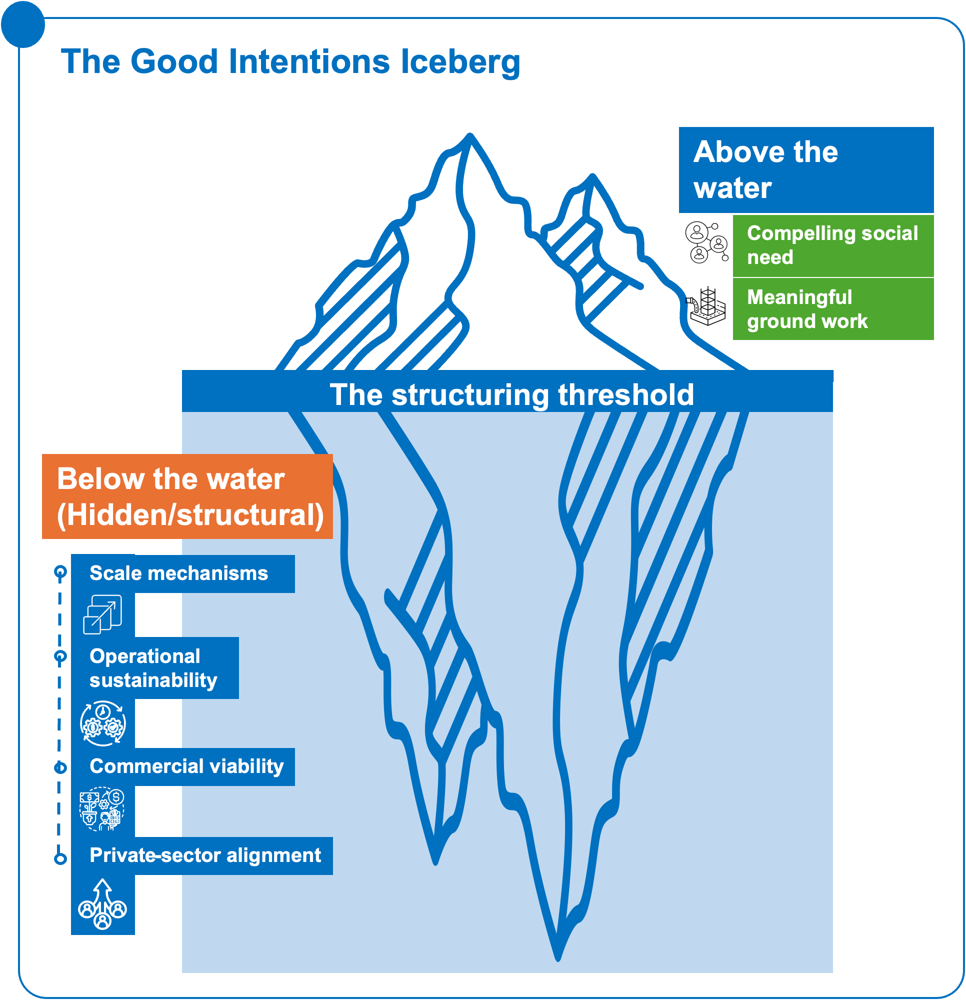

3.1 What the evidence base covers
Scope and nature of evidence
The Playbook draws on evidence gathered across the food, energy, and health sectors in Senegal, Kenya, Ethiopia, and comparator markets. The evidence base combines interviews, desk research, operational examples, and case material from development actors, CSOs, governments, private firms, financiers, intermediaries, and delivery organizations involved in partnership design, implementation, financing, and scale.
The analysis focused not only on successful partnerships, but also on recurring implementation constraints, coordination failures, preparation gaps, operational bottlenecks, and institutional dynamics that continue to limit the transition from social-impact activity to scalable and commercially viable partnership pathways.
Methodology note
The evidence base for this Playbook draws on a structured desk review of over 170 sources covering public and private-sector material across Kenya, Senegal, Ethiopia, Nigeria, Indonesia, the Philippines, and global comparators. The review focused on three primary sectors – health, food and agriculture, and energy – alongside cross-cutting material on PPP frameworks, blended finance, project preparation, guarantees, aggregation, payment systems, and partnership models. Sources included government documents, PPP and legal frameworks, multilateral and technical reports, donor resources, private-sector analyses, academic literature, think tank publications, program documentation, evaluations, and market studies.
The desk review was complemented by more than 30 interviews across major sector actors, conducted with support from FutureAfrica in Kenya and FirstConsult in Ethiopia. The analysis coded sources by geography, sector, topic, and sub-topic, and identified recurring signals across countries and sectors. Particular attention was given to predictable cash flows, project preparation capacity, standardized documentation, risk allocation, payment security, aggregation models, and delivery-system readiness.
Private-sector perspectives were reflected through the desk research, source base, and selected consultations. However, the depth of direct private-sector validation varied by country and sector. Further testing with investors, SMEs, operators, banks, corporates, and financiers would strengthen future iterations of the Playbook, particularly where the analysis concerns incentives, risk appetite, and conditions for commercial participation.

The findings should therefore be read as a qualitative and consultation-informed synthesis, rather than a statistically representative assessment. The Playbook identifies recurring constraints, enabling conditions, and partnership design patterns across the evidence base.
Cross-case observations
The evidence points to a consistent structural challenge: opportunities, delivery capacity, and financing interest already exist, yet they remain fragmented, weakly aligned, and insufficiently organized to support scalable and investable partnership pathways. In many contexts, governments, CSOs, SMEs, donors, financiers, and private operators continue to operate through parallel initiatives, disconnected funding flows, and bespoke arrangements that limit coordination, repeatability, and scale.
At the same time, the analysis highlights that many of the foundations required for scalable partnerships are already present. Existing social-impact and development activities frequently create the underlying conditions that later make commercially viable pathways possible. Community trust, delivery relationships, operational presence, local implementation capacity, and even demand visibility are often established through development-led interventions long before opportunities become attractive to private investors or capable of reaching scale.
The findings therefore suggest that the challenge is not to replace existing social-impact systems, but to better structure, connect, and strengthen them. Across sectors, SMEs already operate across value chains, private providers already deliver essential services, and public or donor programs already generate substantial demand. However, these foundations often remain weakly linked to financing, purchasing, aggregation, reimbursement, and coordination approaches capable of supporting long-term viability and deployability.
The analysis further shows that the primary bottleneck is not the absence of opportunity or capital, but the difficulty of translating fragmented activity into deployable and repeatable execution pathways. Recurring constraints emerged around project preparation, institutional coordination, demand predictability, implementation readiness, payment reliability, risk allocation, governance capacity, and long-term sustainability. As a result, many initiatives remain visible but underprepared, limiting their ability to reach bankability, financial close, or operational scale.
The strongest pathways consistently combined predictable demand, clearer institutional roles, trusted delivery relationships, structured coordination, risk-sharing arrangements, and stronger implementation capacity. The evidence also shows that outcomes depend not only on financing structures, but on the quality of enabling conditions such as procurement reliability, logistics, payment infrastructure, governance capacity, digital systems, and data visibility.
Together, these recurring patterns informed the development of the Playbook’s three proposed partnership models, each designed to address a different but recurring set of structural constraints identified across the evidence base.
3.2 Early case signals
One of the clearest findings across sectors and markets is that social-impact and development activities can create the foundations for commercially viable, scalable, and deployable partnership pathways when the right enabling conditions are in place. Across multiple cases, long-standing development interventions helped establish demand visibility, trusted delivery systems, operational presence, local capabilities, and implementation networks that later supported stronger market participation and more sustainable partnership structures.
What repeatedly distinguished the strongest pathways was not the replacement of social-impact objectives, but the ability to connect them to clearer coordination structures, predictable demand, stronger preparation mechanisms, implementation readiness, and more credible approaches to financing and risk allocation.
The cases reviewed throughout this work revealed that these transitions rarely happened spontaneously. In most instances, commercially viable participation emerged progressively as development actors, public institutions, local ecosystems, and private operators became better aligned around shared operational realities and longer-term delivery objectives. While the pathways differed across sectors and contexts, the strongest examples consistently demonstrated how social-impact and development interventions could gradually create the conditions for more scalable, sustainable, and investable forms of participation.
The Regenerative School Meals Program offers a strong illustration of this dynamic. What began as an effort to improve child nutrition and strengthen food security gradually evolved into a broader effort to reconnect schools, farmers, communities, and local food systems around a shared long-term objective. Rather than treating school meals only as a social intervention, the program positioned them as a stable and recurring source of demand capable of supporting local producers, encouraging more sustainable agricultural practices, and strengthening local supply relationships over time.
As the initiative expanded, the impact extended well beyond nutrition outcomes alone. School feeding systems started to create stronger economic linkages between rural producers and local markets, while also reinforcing trust, coordination, and local implementation capacity across the ecosystem.
Another case that reflects a similar dynamic is Helina Food Complex in Ethiopia. Initially operating as a food producer serving conventional consumer markets, the company identified an opportunity to respond to the growing nutritional needs of children affected by severe acute malnutrition. At the time, humanitarian actors relied heavily on imported therapeutic foods, creating delays, supply vulnerabilities, and limited local industrial participation. What helped shift the trajectory was not the abandonment of the humanitarian objective, but the creation of conditions that allowed local production capacity to emerge around it.
Through a partnership involving UNICEF, donor-backed equipment financing, technical support, and long-term procurement commitments, Helina gradually evolved from a local food producer into a specialized manufacturer capable of supplying therapeutic nutrition products at scale. Over time, the relationship itself also evolved: what initially depended on development support and structured procurement progressively became a more established supplier-buyer ecosystem with stronger local production capacity and reduced dependence on imports.
A comparable evolution can be observed in Sanku’s food fortification model in Kenya. The initiative emerged from a recognition that many of the populations most affected by malnutrition were being reached through small and medium-scale millers that had neither the resources nor the commercial incentive to independently fortify flour. Traditional approaches centered primarily on regulation or awareness campaigns had struggled to achieve meaningful scale, particularly in underserved rural and peri-urban markets.
Rather than treating fortification solely as a public health intervention, Sanku worked to integrate it into the everyday economics of local milling systems. By redesigning incentives, embedding fortification into existing commercial flows, and reducing the additional cost burden on millers, the initiative helped make participation increasingly viable within normal business operations. Over time, what began as a nutrition-focused intervention evolved into a broader market-based delivery model capable of reaching low-income populations through existing private-sector distribution networks.
A different but equally important transition dynamic can be seen through the Kenya Off-Grid Solar Access Project (KOSAP). Large parts of northern and rural Kenya had long remained outside the reach of traditional electricity infrastructure, with many communities considered too remote, risky, or commercially unviable for private-sector investment. While the development need was clear, private operators had limited incentives to enter these markets given high upfront costs, uncertain returns, and operational challenges linked to geography, infrastructure, and purchasing power.
Rather than attempting to replace the private sector, the initiative focused on creating the conditions that would allow commercially sustainable participation to emerge over time. Through concessional financing, results-based funding mechanisms, and risk-sharing structures supported by the Government of Kenya and the World Bank, KOSAP helped reduce barriers to entry for off-grid energy providers operating in underserved areas. As deployment expanded, private companies were able to build operational presence, scale PAYGo energy models, and extend service delivery into markets that had previously been considered inaccessible. The case illustrates how development-led de-risking, structured financing, and implementation support can help transform underserved and high-risk environments into more viable and scalable commercial participation pathways.
Across sectors and operating environments, these cases demonstrate that commercially viable participation rarely emerges from capital alone. More often, it develops progressively through the alignment of trusted delivery systems, institutional coordination, implementation capacity, predictable demand, and incentives capable of supporting long-term participation. While the pathways differed across contexts, the strongest examples consistently showed that development and social-impact interventions can do more than address immediate needs – they can help create the foundations upon which more sustainable and scalable economic systems gradually emerge.
Partnerships between development actors, CSOs, public institutions, and the private sector rarely stall because the underlying social need is unclear. In many cases, the need is well understood, the social-impact logic is compelling, and actors are already delivering meaningful work on the ground. The challenge is that these activities are not always structured in ways that make scale, sustainability, and private-sector participation possible.

Figure 4: Good intentions above the surface – real investability hidden below the structuring threshold.Figure 4: Good intentions above the surface – real investability hidden below the structuring threshold.This section identifies the recurring failure patterns that prevent promising initiatives from becoming investable, repeatable, and legitimate partnership pathways. These are not failures of intent. They are failures of translation, structuring, coordination, and institutional alignment.
The purpose of this diagnostic is to help users understand where the partnership is breaking down before selecting a model or instrument. The right response will differ depending on where the underlying constraint sits: demand, preparation, risk, coordination, legitimacy, institutional role clarity, or operational sustainability.